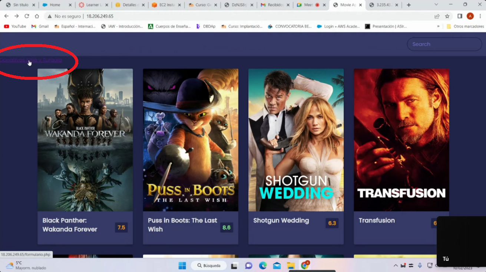

Vamos añadir un formulario en la página Netflix, como se ve en la imagen
Para ello editaremos desde cualquier máquina conectada el Amazon EFS el index.html añadiendo en la <body> el siguiente código
cd /var/www/html/efs_mount
sudo nano index.html
Y añadimos el enlace a formulario.php, quedando el archivo de la siguiente manera
<!DOCTYPE html>
<html lang="en">
<head>
<meta charset="UTF-8" />
<meta name="viewport" content="width=device-width, initial-scale=1.0" />
<link rel="stylesheet" href="style.css" />
<title>Movie App</title>
</head>
<body>
<header>
<form id="form">
<input type="text" id="search" class="search" placeholder="Search">
</form>
</header>
------------------------------------------
NUEVA LINEA: ENLACE A FORMULARIO.PHP
------------------------------------------
<a href="formulario.php"> Donativos Siria y Turquia </a>
--------------------------------------------------------------
<main id="main"></main>
<script src="script.js"></script>
</body>
</html>
Ahora creamos el archivo formulario.php ejecutando el siguiente comando:
sudo nano formulario.php
Escribimos el siguiente código en el archivo creado
<html>
<head>
</head>
<body>
<h1> DONATIVOS PARA TURQUIA Y SIRIA </h1>
<form action="grabar.php" method="post">
<label for="name">Nombre:</label>
<input type="text" id="nombre" name="nombre">
<br>
<label for="donativo">Donativo</label>
<input type="donativo" id="donativo" name="donativo">
<br>
<input type="radio" name="tipomoneda" value="euro" checked > Euro<br>
<input type="radio" name="tipomoneda" value="dolar"> Dolar<br>
<br>
<input type="submit" value ="Enviar" name="enviar" />
</form>
</body>
</html>
Como vemos en el documento html los datos del formulario serán grabados en el archivo grabar.phpque crearemos ahora. Ejecutamos el siguiente comando:
sudo nano grabar.php
Y copiamos el siguiente código:
<?php
include('conexion.php');
$sql = "INSERT INTO donativos VALUES (null,'" . $_REQUEST['nombre'] . "'," . $_REQUEST['donativo'] . ",'" . $_REQUEST['tipomoneda'] . "')";
echo $sql;
if (mysqli_query($conn, $sql)) {
echo "New record created successfully";
} else {
echo "Error: " . $sql . "<br>" . mysqli_error($conn);
}
mysqli_close($conn);
echo "<h1> Donacion grabada correctamente. Gracias por su colaboracion </h1>";
echo "<br><a href='index.html' > Volver a Inicio </a>";
Finalmente creamos el arhivo conexion.php.
sudo nano conexion.php
Y copiamos el siguiente código:
<?php
$servername = "/*PONER AQUI EL ENDPOINT*/";
$username = "admin";
$password = "Root1234$";
$bd="Cluster";/*CUIDADO CON EL NOMBRE DE LA BD*/
// Create connection
$conn = new mysqli($servername, $username, $password,$bd);
// Check connection
if ($conn->connect_error) {
die("Conexión falla " . $conn->connect_error);
}
echo "Conexión exitosa";
?>
Ahora tendriamos en Amazon EFS los archivos:
Crea ahora el archivo prueba.php
sudo nano prueba.php
Y pegamos el siguiente código
<?php
phpinfo();
?>
¿Qué ocurriría si intentará escribir en el navegador https://IP.PUBLICA.EC2/prueba.php? Pues que no funcionaria porque no tenemos PHP instalado en los servidores web. Hay que instalar PHP en todas las máquinas EC2 que funcionan como servidores web.
Ahora vamos a instalar PHP en todas las maquinas EC2 que funcionan como servidores.
Seguiremos el tutorial de la siguiente página. En ella explica como instalar PHP7/8 en
Por defecto, AWS Amazon Linux 2 instalará PHP 5.4 si se ejecuta: YUM Install PHP.Para instalar una version superior de PHP sigue los siguiente pasos
Asegúrese de haber instalado extras de Amazon Linux en su sistema.Ejecutar el comando:
$ sudo yum install -y amazon-linux-extras
Comando Amazon-Linux-Extras mostrará todas las versiones PHP disponibles (y otros paquetes) que se pueden instalar desde el repositorio. Ejecuta:
sudo yum update
sudo amazon-linux-extras | grep php
Verás un resultado como este
Ahora habilitamos php8.0:
sudo amazon-linux-extras enable php8.0
Ahora puede instalar PHP 8.0
seleccionadosudo yum clean metadata
sudo yum install php-cli php-pdo php-fpm php-json php-mysqlnd php-gd
Para confirmar la versión PHP instalada ejecuta:
php -v
Usaremos para la creación estándar porque nos permite definir todas las opciones de configuración, incluidas las de disponibilidad, seguridad, copias de seguridad y mantenimiento. Asi pues, vamos al panel de RDS, pulsamos sobre Crear base de datos, y seleccionamos los siguientes valores en la plantilla
Crea una instancia de base de datos primaria y una instancia de base de datos en espera en una zona de disponibilidad diferente. Proporciona alta disponibilidad y redundancia de datos, pero la instancia de base de datos en espera no admite conexiones para cargas de trabajo de lectura
IDENTIFICADOR DE INSTANCIAS DE BASES DE DATOS: Cluster
CONFIGURACIÓN DE LA INSTANCIA: Clases con ráfagas (incluye clases t)
ALMACENAMIENTO
Cuando le debemos a Aparecerá un aviso de que no puede monitorizar la BD pero si puedes administrarla.
Ahora, creado el cluster de base de datos, creamos una regla de entrada por el puerto 3306 para que esté abierto solo para la comunicación entre el cluster de los servidores web con el cluster de BD, es decir, comunicación exclusiva con la ip de los nodos que funcionan como servidores web de nivel 2.
Antes hemos administrado desde la maquina local, pero ahora vamos a crear una instancias EC Windows, que estará en el Nivel 2, donde haremos todas las tareas de administración. Todo estará en la nube para mayor seguridad. Vamos a EC2 y pusalmos Lanzar instancia y seleccionamos lo siguiente en la plantilla:
Aqui seleccionaremos el grupo de SG_web, que modificaremos para que la maquina pueda acceder por RDP
Pulsamos Lanzar instancia, y mientras se pone en marchamos vamos a Grupos de Seguridad, buscamos el grupo de seguirdad SG_web y añadimos la regla de entrada:
Conocida la contraseña y podemos conectarno a la maquina EC2_Windows